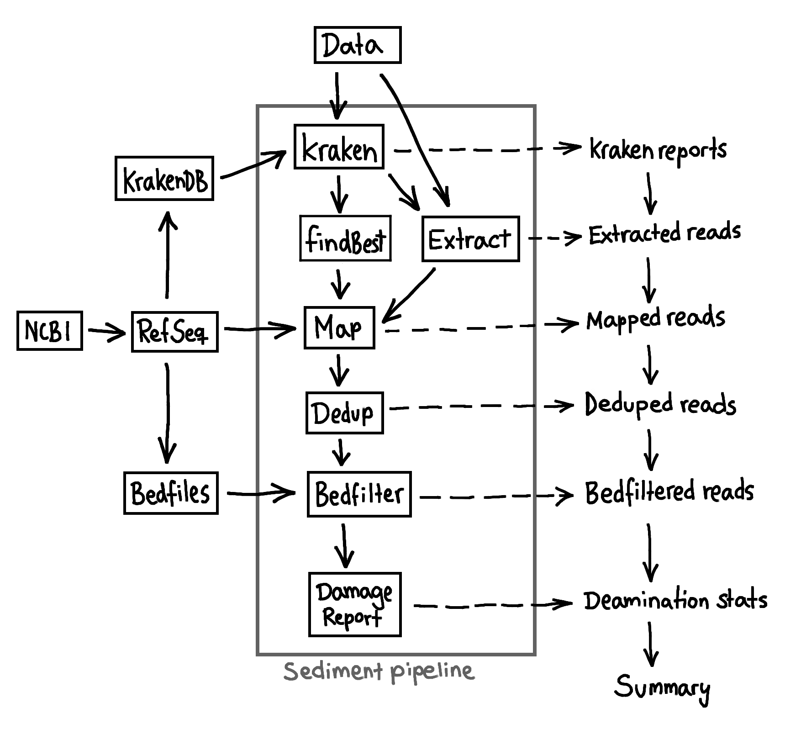

Description
{kind=link}
Workflow
The pipeline consists of three main parts - Classification of reads, Mapping of reads to reference genomes and a Report/Analysis for the created alignments. The pipeline starts with sequenced and demultiplexed, adapter-clipped, and overlap-merged paired reads from an Illumina Hiseq or Miseq platform in either fastq- or bam-format. Classification of reads by KrakenUniq is followed by a mapping step with [BWA] and an analysis of the alignments for quality and aDNA damage patterns. We provide both a taxonomic profile as well as a taxonomic binning of reads by readgroups on a family level.
In the final report we additionally provide the proportion of assigned families as well as an estimate of the ‘ancientness’ of the reads. See the Figure for an overview.
Assignment
Quicksand uses KrakenUniq with a precompiled database created from the current (see 04. Setup Datastructure) non-redundant mammalian mtDNA RefSeq database [Refseq] and by default a k-mer size of 22. The speed of KrakenUniq allows for a quick sorting of reads into families. To filter for false-positive assignments, we disregard families that are assigned by less than 3 reads or 129 unique k-mers. For each family the taxon with the highest number of assigned unique k-mers is picked as the taxon representative for that family at that site. In parallel, all reads assigned to that family are binned and extracted from the original input-file.
Mapping
The extracted reads - based on the KrakenUniq assignments - are then mapped against all reference genomes of species from the representative taxon using the network-aware fork of BWA with ancient parameters [Meyer,2012]_. Exact PCR-duplicates are collapsed into singletons using bam-rmdup based on the sharing of identical alignment start and end coordinates. Reads shorter than 35bp and reads with a mapping quality of less than 25 are removed. From all mapped genomes, the one with the highest numbers of basepairs covered is picked as the final representative for the mapping analysis. To avoid the mapping of sequences to non-informative and repetitive regions, the alignments are depleted of reads that overlap sites marked as non-informative by [dustmasker].
Analysis
Based on the mappings to the reference genome a rough estimate of the ancientness of the mapped reads is reported. Reads generated from ancient DNA show characteristic C to T substitutions at the 3’ and 5’ ends of the fragment - a typical degradation pattern used to identify ancient DNA in silico. Families that have more than 10% of both terminal positions - with a C in the reference genome - replaced with a T are reported as being ancient in the summary report.